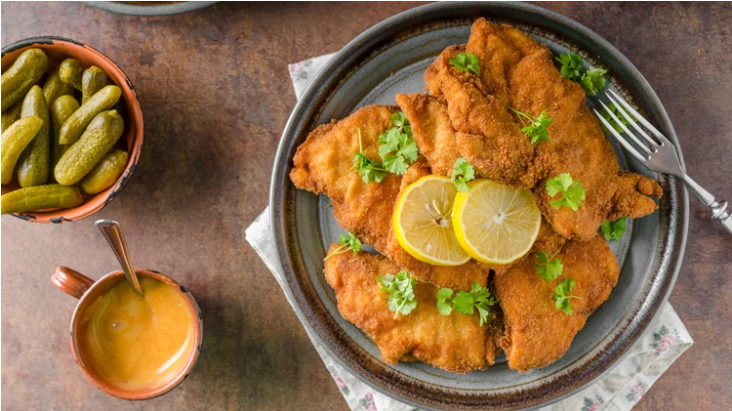
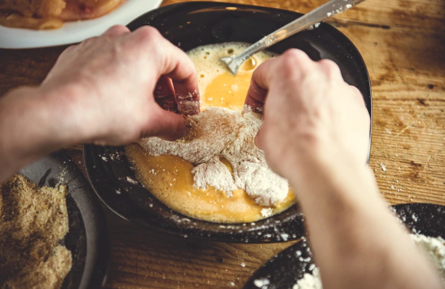
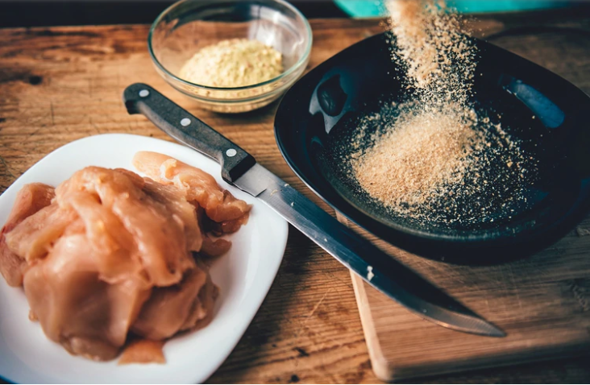
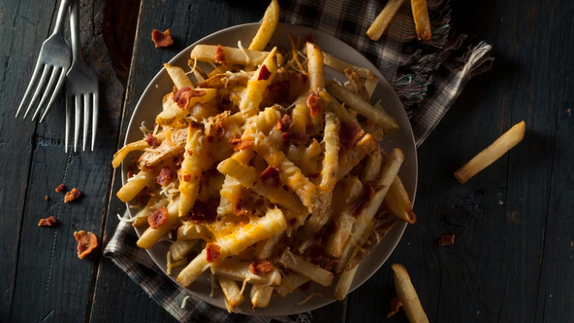

Día de la Milanesa: los secretos detrás del imprescindible plato de la cocina
Argentina
Frita o al horno, de carne, pollo, pescado o de soja, a la napolitana o caballo, la
milanesa es
una comida ícono por excelencia. Aunque su nombre remite a la ciudad italiana, se convirtió en
un plato tradicional de la cocina argentina, paraguaya, uruguaya y boliviana. Las claves para
prepararla y los mejores restaurantes para pedirla.

Cada 3 de mayo las redes sociales son invadidas por fotos, historias y hashtags
relativos a una
efeméride que homenajea a un símbolo nacional: el Día de la Milanesa será el #DiadelaMilanesa,
un trending topic que se compartirá en todo el territorio nacional para celebrar la penetración
cultural de un tradicional plato argentino.
A pesar de la actual explosión gastronómica, que ofrece nuevos y variados sabores a través de la
comida e inauguración de restaurantes de comida exótica en la ciudad, la milanesa permanece en
los menús como parte integral de la historia gastronómica argentina. "El argentino nunca se va a
cansar de las milanesas, se puede cansar del sushi o de la cocina asiática, pero nunca de las
milanesas", advirtió Martín Arrieta, el reconocido chef argentino.
Su arraigo en las familias no tiene que ver con un comensal de paladar infantil, si no con uno
que demanda calidad en el sabor. "Dejando de lado el asado, es uno de los platos rioplatenses
por excelencia, como los ravioles o ñoquis con estofado", agregó.
Cómo preparar una auténtica milanesa argentina

Carne, leche, huevos, pan rallado y condimentos. "Uno de los aspectos que la
convierte en única
es la sencillez que la representa. Es una comida completa y rápida, que permite en minutos
servir una buena comida", explicó German Sitz, considerado hoy entre los mejores siete
chefs sub-35 de la Argentina.
"Para mí la milanesa debe ser de nalga, por una cuestión de la composición del corte, muy magro
sin nervios ni durezas", advirtió acerca del corte de carne para prepararlas.
En un bol se deben mezclar los huevos con la leche, ajo y perejil, y salar esta preparación.
Pasar cada corte de carne por la preparación y luego el pan rallado para finalmente freír las
milanesas en una sartén con abundante aceite caliente.
Si bien algunos recomiendan sazonar la carne con la sal, pimienta y orégano, para El Antojo, el
bodegón en Villa del Parque que ganó el concurso que premiaba a la mejor milanesa de la ciudad,
el secreto está en el marinado.
Arrieta recomienda no sazonar la carne, sino condimentar a la inglesa y agregar sal y pimienta a
la mezcla de huevo para un plato tradicional.

El pan rallado industrial contiene levadura y no absorbe humedad, a diferencia del
pan rallado
proveniente de panadería. Por su parte, el rebozador garantiza a la milanesa terminada una
mínima absorción de aceite por lo que los expertos recomiendan utilizar una proporción de 30%
pan rallado y 70% rebozador.
"El pan de panadería, rallado grueso y no en polvo es la mejor opción para las milanesas.
Rebozar con panko, o pan rallado japones ha probado ser un recurso que beneficia su sabor y
textura", aconsejó Arrieta.
El de panadería tiene el sabor al pan original sin aditivos y el panko si bien le otorga
textura, no es nada novedoso. Para las milanesas el chef recomienda mezclar un 70% de pan
rallado de panadería con un 30% de panko, para una terminación más crujiente. E incluso sugiere
agregar al rebozado hierbas aromáticas o algún ají picante molido.
Con papas fritas o con puré

"Para el acompañamiento, los argentinos eligen equitativamente puré de papas o papas fritas",
advirtió Rafael Vargas, del Club de la Milanesa.
Aunque algunos advierten que las papas fritas se llevan el primer lugar, otros aseguran que
comparten el podio de los acompañamientos más populares con el famoso puré de papas.